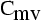
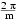

The series 
The group is the group generated by a rotation of angle  around a fixed axis D, and a symmetry on a plane P containing D.
Features
- Algebraic structure: it is Dihedral group of order 2m
- Kind of elements
- 1 element: identity,
- m-1 elements: rotation of angle k with 1<=k<=m-1 around D,
- m elements: plane symmetry on plane Pk containing D, with angle between two plane Pk, Pk+1 being pi/m.
- Particular cases
- if m=1, then the group is

- Examples
- First fulleren of symmetry :
- First fulleren of symmetry :
- First 4n of symmetry :